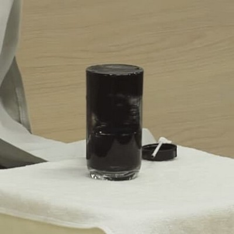
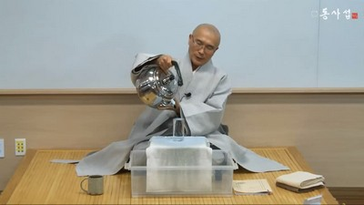

同事攝아카데미
一般課程
第22 講 맑은 물 붓기
맑은물붓기 道具 들을 이렇게 보고만 있어도 幸福하네. 자, 컵에 이렇게 맑은 물을 넘치게 붓습니다. 좋지요? 보시기에 좋았더라. 하나님께서 宇宙 創造를 完成해놓고 둘러보시니까 너무너무 좋았어요. 그것을 지켜보고 있던 선지자가 우리 하나님 마음이 어떤가 보자 하니까 보기에 좋구나 하시며 너무 좋아합니다. 그 보시기에 좋았던 그 宇宙가 바로 맑은 물이 가득한 이 물컵입니다.
자, 우선. 이 맑은물붓기 講義는 1990년 여름, 미국 에미서리 共同體의 삶의 藝術이라는 세미나에서 처음 만났습니다. 캘리포니아 코로나 시에 있는 그래나이비라고 하는 마을에 있는 共同體였습니다. 에미서리 共同體의 센터는 콜로라도주 러브랜드시에 있습니다. 콜로라도주 러브랜드시. 이름이 좋지요? 러브랜드. 사랑의 땅. 사랑의 땅이라는 시티에 마을 이름은 썬라이즈입니다. 해 뜨는 마을. 썬라이즈. 참 좋지요? 콜로라도주 러브랜드의 썬라이즈. 해뜨는 마을 그 곳이 본부입니다. 그 브랜치가 韓國에도 있어요. 그 브랜치가 캘리포니아주 그래나이비에도 있고요.
그 그래나이비에서 일주일 동안 삶의 藝術 세미나를 하는데 그 중에 이 맑은물붓기 講義가 나와요. 그 때 이 講義가 너무도 感動적이었는데 더욱 感動적이었던 이유는 내가 韓國에서 하고 있는 세미나에서 世上에 傳達하고자 하는 메시지를 저 맑은물붓기로 傳達하면 정말 좋겠다는 생각이 들었기 때문이었어요. 그래서 내가 許諾을 받았지요. 나는 韓國에서 이러이러한 세미나장을 하는 사람이다. 그런데 내 메시지를 傳達할 때 이 맑은물붓기로 講義를 하면 아주 좋을 것 같으니 맑은물붓기 講義를 韓國에서 해도 되겠냐 했더니 그네들이 무엇이라고 했겠습니끼? Sure! (슈어!) 그랬습니다. 欣快히 그렇게 하세요! 한 것입니다. 그래서 늘 고맙게 여기고 있습니다. 그리고 맑은물붓기 講義뿐만 아니라 여러가지 에미서리 共同體의 思片들, 價値觀 體系들의 상당한 것이 나에게 영향을 주어서 同事攝에 많이 反映되었습니다. 나는 韓國에서 同事攝이라는 이름으로 표현하기를 가르치는데 그 곳 에미서리야말로 표현을 얼마나 중시하는지 모릅니다. 표현의 부재는 實體의 부재다 하는 말은 내가 만들었지만은 에미서리 共同體도 그 뜻을 그대로 가지고 있습니다. 마음 속에 사랑이 있는데 그 사랑이 표현되지 않는다면 무슨 의미가 있겠는가 하는 것이 그분들의 기본 가르침입니다. 아무튼 에미서리 共同體의 번영을 爲해서 박수 한 번 쳐주십시오.
자, 이 맑은 물의 의미는 아까 서두에 말씀 올렸습니다마는 하나님이 宇宙를 創造하고 나서 宇宙를 둘러볼 때 참으로 청정하게 좋은 그 세계. 하나님께서 創造해놓고 보시기에 좋으셨던 그 세계를 의미합니다. 또 무엇을 의미하는가 하면 부처님께서 보리수 하에서 大覺을 성취하시고 딱 宇宙를 둘러보니까 宇宙는 완전청정. 완전하게 淸淨無垢한 불국정토 인 것입니다. 석가모니가 大覺을 성취하고 둘러보았을 때 좋은 그 世上. 석가모니가 여기 앉아서 본다면 여러分을 보고 좋겠어요? 안 좋겠어요? 완전 천국. 완전 천사로 보입니다. 그러니까 이 맑은 물은 바로 여러分들이고 바로 이 世上입니다. 그런데 그 깨끗한 世上을 굴절된 눈으로 보면서 世上이 좋지 않다고 타령을 한다고요. 그러니까 굴절되지 않는 눈으로 보면 아예 이 世上 자체가 맑은 물이라는 뜻입니다. 그리고 심리학的으로 말하자면 갓 태어난 어린 아이의 마음이 이 맑은 물입니다. 어린 아이가 갓 태어났을 때 그 마음은 아주 깨끗하겠지요? 그래서 이 맑은 물은 世上에 전혀 오염되지 않은 어린아이의 마음을 의미하기도 합니다.
또 무엇을 의미하냐 하면 여러分들이 그 생각을 했더니 幸福해진다 하는 그 생각이 바로 맑은 물입니다. 그 말을 하니까 기뻐지고 幸福해진다 하면 그 말이 맑은 물입니다. 그 行動을 했더니 나도 막 기쁘고 주변사람들까지 기뻐진다. 그러면 그 行動이 맑은 물입니다. 그래서 우리들이 자기 속에서 무엇을 생각하거나 무엇을 말하거나 무엇을 行動하는 思言行 그것이 우리를 기쁘게 하는 것이라면 그 모든 思言行이 이 맑은 물입니다. 그러면 갓 태어난 어린 아이의 마음이 바로 맑은 물과 같다고 하는데 뿌리를 대고 이 講義를 이어가겠습니다.
자, 앙~~~하고 우리 무풍지대님이 世上에 태어났습니다. 그때, 앙~~~하고 태어날 때 어땠어요? 너무 좋았지. 앙~~~ 하고 태어날 때 그 앙~~을 잘못 해석하는 사람들이 있더라고요. 그 사람들은 그 앙~~소리가 이 고단한 世上, 어떻게 살다갈까~~ 하는 소리라고 해석합니다. 그렇게 해석하는 사람들의 눈을 굴절시각이라고 합니다. 그런데 내가 애기 낳는 데를 백만 번은 갔는데 앙~하고 태어난 모든 아이들이 한결같이 거짓없는 환희로움으로, 신나는 世上 잘 살다 가자~~~ 이런 소리를 앙~으로 드러내는 것이었어요. 또 어떤 아이들은 야~~정말로 世上이 어떻게 생겼는가 궁금했는데 나와 보니 너무너무 좋다~~ 하면서 앙~~한 거예요. 우선 말을 배우지 못했으니까 숨이 터져나오면서 앙~ 하는 소리인데 그 소리의 배경이 그런 뜻인 겁니다. 또 어떤 똑똑한 아이는 天上天下唯我獨存~이라고 외치는 겁니다. 그래서 갓 태어날 때 어린아이들의 에너지는 이렇게 맑음으로 넘치는 겁니다.
그렇게 태어났는데 그냥 온 가족들이 왕자요~~하면서 환호를 해주니까 그 아이는 더 신나는 기쁨으로 맑은 물이 철철철철 막 넘칩니다. 또 우리 마음님이 태어났는데 순산이요~~ 하니까 막 기뻤습니다. 왕자라고 환영해주니 기쁘고 공주라고 환영해주고 순산이라고 환영해주니 기쁘고, 아이가 살짝 웃기만 해도 우리 강아지 웃는다고 환호합니다. 우리 집에서는 강아지란 말을 많이 썼어요. 나는 강아지 소리를 第一 많이 들었을 것 같아요. 그저 강아지야. 우리 강아지, 우리 강아지.
나는 별것도 아닌 것으로 맑은 물을 받았는데 내가 약을 잘 먹었던 것 같아요. 약도 칭찬받으려고 잘 먹는 거예요. 우리 강아지는 쓰디쓴 약도 잘 먹어~ 하면서 약 먹으랍니다. 그래서 먹으면 실제로 씁니다. 그래도 맛있다, 맛있다 하면서 막 마십니다. 그러면 아이고~ 우리 강아지, 쓰디쓴 약도 잘 먹는다고 하지요. 그러니 내가 맑은 물이 막 넘쳤다고. 그러고 또 반찬이 별로 없지 않아요. 김치 하나 주거든. 나는 김치 투정을 잘 안했던 모양입니다. 그러니까 아이고~ 우리 강아지, 김치 투정을 안 하고 신 김치 하나만 주면 잘 먹는다고 합니다. 그러니까 별 것 아닌 걸로 칭찬받으면서 기뻐집니다. 이런 것이 다 맑은 물입니다.

또 내가 어떻게 뽁뽁 기어가다 보니 잉크를 엎어버렸어. 아이고~ 우리 강아지 일까지 하시네, 그러고 박수를 쳐주니까 잉크 엎고도 맑은 물이 막 넘쳤습니다. 또 내가 쉬야를 쫘악~ 했더니 우리 강아지, 우리 왕자님, 쉬야까지 하신다고 박수를 쳐대니까 이거 기가 막혀. 쉬야하면서 맑은 물이 막 넘칩니다. 응아를 하니까 이바지한다고 또 박수를 칩니다. 그러니까 응아를 해도 막 맑은 물이 넘칩니다. 아~ 그냥 전부 100 % 통과야. 100 % 통과. 한 번은 내가 누워만 있다가 어떻게 해서 딱 이렇게 해서 몸을 뒤짚었어요. 아이고 아이고, 우리 강아지 드디어 뒤짚기 했다고 하면서 그냥 축제라도 여는 것처럼 하길래 어리둥절해서 맑은 물이 막 넘쳤습니다. 이런 式으로 갓 태어난 어린 아이는 맑음의 역사를 이어가게 됩니다. 그렇게 계속, 계속 하면 좋겠지요. 그런데 현실은 그렇지를 못합니다.
부모가 보니 똥, 오줌 가리는 걸 가르쳐야 할 때가 된 것입니다. 똥 쌌다고 박수만 쳐줘서는 교육상 안 좋을 것이지 않겠습니까. 오줌도 가려줘야 합니다. 그래서 한번은 쉬야를 하고는 맑은 물 받을 준비를 하고 있는데 그냥 엄마가 넓적다리를 탁 치면서 임마~! 인제 쉬야하려면 쉬쉬쉬-- 하고 싸인을 보내야지 그렇게 막 싸는 것이 아니야! 하는 겁니다. 그렇게 넓적다리를 탁 때리니까 나에게 드디어 충격이 始作된 것입니다. 이 충격! 그래서 넘치던 맑은물에 검은 잉크가 들어가기 始作합니다. 한 번은 응아를 했더니 또 넓적다리를 때려서 또 충격. 또 잉크 방울. 한번은 잉크를 엎었더니 잉크 엎으면 되겠냐고 또 탁! 그래서 또 충격! 그래서 시커먼 잉크가 또 들어갑니다. 이래서 사사건건 問題가 됩니다.
어떤 집에선 왼손으로 밥을 먹는다고 問題가 됩니다. 왼손으로 밥 먹지 말아라. 밥풀 흘리지 말아라 하고 야단맞고. 또 工夫못한다 하고. 나는 그나마 工夫못한다는 말은 서 들어본 일이 없어요. 그렇게 빼어나게 잘 한 것은 아니지만은 조금 괜찮은 쪽이었던 모양입니다. 그런데 내 친구들 보면 工夫못한다고 야단맞아요. 나 때문에 내 친구들이 꾸지람 많이 들었어. 그래가지고 막 이렇게 잉크물 오염의 역사가 줄줄 이어집니다. 나도 한번 잉크물이 사정없이 들어간 적이 있었어요. 나를 보고 쌀을 펐다는 겁니다. 나는 안 펐는데. 쌀을 푼다는 말 알아요? 모를 거예요. 요새 사람들은. 그 때는 용돈이란 게 없었어요. 과자 사먹고 빵 사먹고 싶은데 돈이 없으니까 무얼 해야 되겠어요? 쌀 퍼다가 줄 테니까 빵 얼마치만 주라고 해서 먹고 그랬다고. 그리곤 쌀 퍼다가 그것으로 갚고 했어요. 그러니깐 우리 어머니는 쌀을 퍼냈는가 어쨋는가 보려고 쌀을 딱 재 놓습니다. 그리곤 쌀을 평평하게 해놓습니다. 그런데 어떻게 해서 푼 흔적이 있었던 모양이야. 그러니까 나보고 쌀을 펐다는 겁니다. 아이고, 世上에 우리 어머니도 나쁘지. 어떻게 나를 도둑 취급을 하느냐 그겁니다. 그땐 너무 화가 나서 이 잉크물이 얼마나 들어가 버렸나 몰라요. 몇 방울程度가 아니예요. 들어 부어야 할 程度의 사태가 벌어진 겁니다. 그래서 내가 그냥 行動으로 내 결백을, 내 청정을, 내 무죄를 보여줘야 하겠다 해서 긴 새끼줄을 들고는 내가 보여주마 하고 산으로 올라갔다고. 목을 달아버리려고. 산으로 올라가가서 소나무에다 딱 묶어서 목에다 달았는데 주변에 사람이 없는 거예요. 누군가 사람이 보고 달려와서 어째 죽느냐~~해줘야 하는데 사람이 하나도 없어. 그래서 내가 진짜 죽으려고 간 줄 아냐~~!! 하고는 새끼줄을 내동댕이쳤어요. 그래서 그 놈의 쌀소동大門에 잉크 물이 얼마나 처들어갔는지 몰라. 아, 그러고는 뱅글뱅글 동심원 그리면서 살살살 집에 갔는데 우리 할머니가 나와 가지고는 하는 말이 “아이고 아이고, 니그 누이가 쌀 펐단다.” 하는 겁니다. 두 살 위의 누나가 있는데 그 누나가 쌀 펐다는 게 이제 드러났다는 겁니다. 그때 억울한 것이 풀려서 맑은 물이 조금 들어가려 했지만 그 때까지 들어간 잉크물이 원체 많아서 그것이 안 되었어. 이런 式으로 只今 이 컵 속의 잉크물을 보면 우리들의 오염, 여러分들의 오염의 역사가 다 보일겁니다. 이때 여러分들이 여기에서 무엇을 보아야 되느냐.
나는 무엇으로 오염이 되었겠구나도 보아야 되고, 내가 이런 저런 방법으로 내 주변 사람들 오염도 꽤나 시켰겠구나 하는 것도 보아야 합니다. 나는 아무개씨의 아들인데 내가 아들 노릇 잘 못 해서 어머니 아버지는 나 때문에 잉크물이 꽤나 들어갔겠구나, 이런 것도 보시고, 나는 딸 교육, 아들 교육 시킨다고 내 딸 아들에게 잉크물을 꽤나 부어주었겠구나, 이런 것도 보시고, 뭐 그런 것을 가만히 돌아보아야 합니다. 아무튼 이런 오염의 역사는 다양합니다.
내 境遇 몇 가지 예를 들어 볼게요. 초등학교 1학년 때 학교를 늦게 다니기 始作했어요. 입학식을 해놓고 이빨이 아파서 한 달인가 늦게 가니까 딱 전학생 취급을 하는 겁니다. 한 학급이 60 명이니까 30 줄이 있는 중에 나는 앞에서 세 번째에 서게 되었어요. 키가 작았어요. 그런데 네 번째 놈이 발로 톡 차요. 그러면 뒤로 가야돼. 또 다섯 번째 놈이 발로 톡 차. 그럼 뒤로 또 가야돼. 이 過程이 어쨌겠어? 이러다 죽겠더라고. 두 번程度 당하고 세 번째는 第一 뒤쪽 꽁무니로 가버렸다고. 아니 그렇게 수모스런 짓거리를 당할 때 내가 얼마나 이 잉크 물이 들어갔는가 모른다고. 그런데 한번은 또 그 꼴이 됐는데 우리 할머니가 와서 있는 판인데 내가 그 지경을 당해버렸어요. 할머니가 와서 보고 있는데. 한번은 또 그림 時間에 그림 그려서 냈는데 선생님이 딱 그림을 보더니 “임마, 그림은 자기가 그려야 되는 거지. 형들이 그려준 걸 가지고 오면 안 돼!” 이러더라고. 아~니 이럴 수가 있어. 그래서 나는 또 앵~ 울어버렸어요. 잉크물 처바르면서. 마침 그때 옆에 있던 친구가 “아닙니다. 아무개가 내 옆에서 함께 그렸습니다. ” 했어요. 그랬더니 선생님이 “어, 이거 네가 그렸냐?” 합니다. 그래서 눈물 닦으며 예, 했지요. 선생님이 “그림 잘 그리네” 하더니 그 다음날 보니까 내 그림이 딱 뒷벽에 붙어있더라고. 그때 조금 맑은 물이 들어가려했지만 그程度로는 않되게 생겼어. 네. 이런 식이지요.
진짜로 기막히게 잉크물이 들어간 사건은 고무신 사건이예요. 초등학교 2학년 때, 그놈의 고무신을 새로 하나 사줬어. 고무신 하나를 새로 신게 됐다는 것은 기쁨 중의 기쁨이었어요. 왜? 그 당시에 고무신 하나 깨끗하게 신고 오는 애들은 그리 많지 않았거든. 짚신 신고 다니고 맨발로 다니고 막 그러던 시절이예요. 4~5 킬로를 걸어서 학교를 가는데 사람이 안보이면 고무신을 보면 들고 갑니다. 아까우니까. 그러다가 사람이 저기 보이면 얼른 신어. 그러다 사람이 없어지면 그냥 가. 이러면서 학교까지 갔는데 하필 그날 “선생님, 저 신발 잃어버렸습니다. ” 누군가 그러는 거예요. 그랬더니 선생님이 어 그래? 전부 내 앞에 신발 벗어놓아라 하는 거예요. 앞에다 쫘악~ 벗어놓으니까 자, 어떤 것이 네 신발인가 보자 하는데 그 아이가 하필 내 신발 앞에 와서는 손가락질을 합니다. 그래? 그거 신어봐, 했는데 딱 그놈 발에 맞아버려. 그러니까 나한테 또 선생님이 호통을 치면서 ‘남의 신발을 신고가면 안 되는 법이야’ 막 이럽니다. 그런데 내 대응법은 오직 하나였어요. 앵~~~~. 앵~ 울고는 집까지 5 킬로를 걸어서 가는데 처참해. 참담한 상황이 되버린거예요.
집에 갔더니 어머니가 똑똑한 귀신만도 못한 놈이 신발 잃어버리고 왔다고 또 얼마나 악을 쓰더니 들어가 버려. 이제 신발 잃어버리고 왔다고 아버지한테 꾸지람 들을 생각을 하니 또 기가 막혀. 그거 생각만 해도 잉크물이 막 들어갑니다. 多幸히 아버지는 아무런 소리를 안 했지만. 아, 그러고 어머니도 참 멍청하데. 아들이 신발을 뺏기고 왔으니까 그 다음날 학교에 따라와서 신발을 찾아주면서 내 아들 결코 도둑질할 애가 아니에요, 했어야 될 것 아니야? 나중에 생각하니 그것도 안했더라고. 좀 멍청했더라고. 물론 바뻤지. 그런데 재미있는 것은 그 해 내가 개근상을 받았다는 事實이예요. 그러니까 도둑 누명을 쓰고도 그 다음날 학교를 갔다는 事實이 아주 훗날 意味로 발견이 되더라고. 아~ 내가 참 꺼벙한 것도 괜찮구나. 저기 저, 우리 심월님, 너무 천사처럼 보이죠? 그런데 심월님程度만 하더라도 그 지경이 됐으면, 절대로 당하지도 않겠지만, 당했다고 하면 다음날 그냥 학교에 가지 않아요. 한 손에 휘발유, 한 손에 라이터를 탁 들고 가서 내 신발을 내놓고 내 도둑누명을 볏겨주지 않으면 이 학교에 불을 쳐지르겠다, 딱 그럴 거예요. 나는 그럴 마음이 단 1g도 내 속에서 안 나왔어요. 그냥 학교에 갔어. 그냥 학교 갔다는 것이 한침 나중에 생각해보니까 기가 막힐 일 아닙니까. 그렇게 사람이 비겁할 수가 있냐. 그런데 훗날 생각해보니까 내가 그럴 때 멍하니 그랬기 때문에 只今까지 장수하지. 만일에 그럴 때 막 씩씩댔더라면 모난 돌이 정 맞는다고 찍혀서 진즉 죽었을 수도 있지 않느냐. 그래서 사람이 멍청한 듯 하고 비겁한 듯 하고 이래야 좀 살아남지, 하고 그 공덕이 좀 발견 되더라고요.
그러나 그것으로 나는 한정없이 오염되었지요. 이러고 이런 내 이야기들은 우리 모두의 이야기로 여러分들 속에 다 있을 겁니다. 여러分 들도 주변 사람들에게 잉크물 부어준적 있지요? 나는 내 동생들에게 잉크물을 부어버렸어요. 별 것 아닌 것으로 두드려 패고, 악 쓰고. 한번은 문턱 밟으면 아버지 죽고 베개 세우면 어머니 죽는다, 이 소리를 딱 듣는 순간에 나에게 이 잉크가 얼마나 들어갔는지 몰라. 어매~ 내가 문턱을 한두 번 밟았냐. 베개를 한 두번 세웠냐. 그 때는 장난감이라곤 베개밖에 없잖아. 워메, 우리 어머니 곧 죽게 생겼어. 아버지 곧 죽게 생겼어. 덜덜덜 떨었다고. 아, 그런데 내 동생이 문턱을 딱 밟고 들어오는거야. 그래서 “이 새끼야! 아버지 죽는데, 이 새끼야 문턱을 밟고 오냐” 동생 따귀를 막 때리니까 앙~~하고 우는 거야. 내가 동생에게 얼마나 잉크물을 퍼부었는지 몰라요. 아, 또 동생 한 놈이 베개를 세우고 놀고 있어. “아, 이 자식아. 어머니 죽어. 이 자식아!” 이래 가면서 이 오염의 역사는 주거니 받거니 하면서 엮어집니다. 그러니 이미 나이가 어느 程度 들었다 하면 너, 나 할 것 없이 다양한 레파토리를 통해서 마음이 이렇게 오염되어 있습니다. 이렇게 시커멓게 오염된 이 잉크물을 어떻게 解決 해야 할 것이냐. 오염된 이 마음을 어떻게 정화할 것이냐. 이것이 역사의 숙제고, 그 숙제를 풀기 爲해서 문화 문명이 존재하는 거예요.
문화 문명 중에서特히, 종교, 교육 이런 쪽에서는 그 問題를 주된 主題로 삼고 다른 쪽에서는 간접的인 主題로 삼으면서 오염된 이 마음을 어떻게 정화할 것이냐에 對한 응답으로 문화 문명이 엮어지는 법입니다. 그런데 인류역사에서 오염된 잉크물을 정화하자고 여기에 접근했던 모든 접근법들이 두 가지 오류를 범했어요.
오류 1 번입니다. 어때요? 이 물이 다 시커멓게 되었지요? 그렇게 다 시커멓게 되었다는 생각이 오류 1번입니다. 이것은 잉크 방울을 살짝살짝 넣어서 전부가 오염된 것으로 보이지만은 事實 이것을 제대로, 질的으로 따져보면 맑은 물이 99.99 %입니다. 그리고 잉크는 아주 조금 들어갔습니다. 그런데 이것을 보고 느낌으로, 주관的인 느낌으로, 100 % 전부가 오염되버린 것처럼 생각하는 것이 오류1번입니다.
두 번째 오류는 무엇이냐. 이것을 정화를 爲해서는 잉크를 빼내야지. 잉크 나와라. 잉크 나와라, 잉크 나와라. 이거 잉크 다 빼고 갑시다. 잉크 나와라. 이것 다 빼고 집에 가려면 오늘은 못가고 내일도 가기 어려울 거예요. 이렇게 잉크 자체와 사우는 것이 두 번째 오류입니다. 언제 잉크가 다 나오겠습니까? 그냥 이렇게 이 시커먼 잉크물 컵에 맑은 물만 부으면 되는 겁니다. 이렇게 맑은 물을 부어버릴 것 같으면 몇 초 내로 다시 맑은 물이 되는데 이렇게 簡單한 길을 놔두고, 잉크와 싸우면서 잉크 나오라고 합니다. 이것이 역사가 저지른 두 번째 오류예요. 그 양대 오류를 벗어나지를 못하고, 교육의 역사, 문화의 역사는 21세기까지 왔어요. 근래에 와서는 조금 달라졌어요. 긍정철학, 긍정교육이 많이 나와서 긍정화 운동들이 많이 생겨서 只今은 조금 달라졌습니다. 그러나 우리가 어렸을 때는 부모로부터 거의 칭찬 한마디를 들을 수가 없었어요. 칭찬을 해도 본인 없는데서 아, 그녀석이 조금 괜찮은 것 같아. 그런程度로나 합니다. 칭찬하면 아이를 버릴 것처럼 생각했던 것 같아요. 左右之間 그 두 가지 오류를 밟지 않고 맑은 물만 부으면 된다는 겁니다.
어느 精神병동에서 환자 하나가 보니 방이 어두컴컴하거든. 그래서 왜 이렇게 어둠이 꽉 차 있냐. 어둠을 몰아내야지 하고는 창문을 열고 키를 들고 와서 어둠 나가라, 어둠나가라, 하면서 어둠을 쫓아냈어. 8 時間을 노력을 해서, 8 時間정도를 땀을 뻘뻘 흘리면서 어둠 나가라, 어둠 나가라 하니까 아이고, 어둠이 나가고 막 밝아지거든. 그래서 아이고, 내가 노력한 大家가 있구나. 어둠이 다 나갔구나, 하고는 너무 지쳐가지고 잠을 쿨쿨 자고 딱 일어나보니까 다시 캄캄해졌거든. 또 키를 가지고 와서 어둠 나가거라, 나가거라. 자기가 어떻게 어둠을 내보냈겠어? 인류역사는 그런 어리석음을 범해왔어요. 어둠과 다투는 어리석음. 그런데 맑은 물만 부으면 되겠구나 하는 것이 只今 답으로 나왔습니다. 그러면 맑은 물 붓기란 具體的 으로 무엇을 의미할까요?

同事攝전 課程이 그렇습니다. 전 課程이 맑은 물 붓기입니다. 내가 의식이 딱 들면서 천하를 둘러보니 천하가 物自體라 천하가 본래청정이로구나, 頓忘 이로구나 하고 인식하는 그것이 바로 맑은 물 중의 맑은 물입니다. 또 천하를 둘러보니 좋은 것이 너무너무 많은 거라. 너무너무 많아요. 凡事가 感謝한 것이 맑은 물입니다. 가까운 데서부터 보면요 아무개 하면 예~ 하고 대답하는 이 혼 있잖아요. 이 혼에 대해서 여러 分들 한번 느껴보았습니까? 얼마나 신비하고 얼마나 신기한지 느껴보았습니까? 정말로 기막힌 신비는 의식입니다. 의식. 이렇게 내가 내 손등을 만지면 느낌이 느껴집니다. 무언가를 느끼는 이 의식 말입니다. 이 의식을 떠올리면서 신비로다. 내 의식이여, 하고 생각하고 표현하는 것이 맑은 물입니다. 또 이 의식은 묘합니다. 기계가 정말로 잘 돌아가요. 아홉을 아홉 번 곱하면 얼마? 일초도 안되서 81 하고 탁 알아버립니다. 이건 영물입니다. 이 영물. 기막히지 않아요? 기 막힌 내 혼이여. 내 몸뚱이를 봐도 머리부터 발 끝까지 완전히 기가 막혀. 아니 世上에 눈이 어떻게 해서 생긴 건지. 世上이, 이 世上이 눈을 통해서 다 들어오지 않아요? 눈의 신비 찬탄해 보셨어요? 해보셨어요? 또 이 귀를 통해서 들어오는 것들. 귀 찬탄 해보셨어요? 눈, 귀, 코, 위장. 나는 위장도 진짜 기가 막혀요. 나는 굉장히 잘 먹는 사람이예요. 요새는 내가 조금 칼로리 조절하고 덜 먹지만 굉장히 많이, 아무리 많이 먹어도 이놈이 말이야 불평불만 한마디도 없이 착착착착~ 제가 연동운동을 해서 착착착 내려 보냅니다. 얼마나 感謝해요. 이야~~ 내 위장 위대하도다, 感謝하고 찬탄하는 것이 맑은 물입니다. 또 내 허파. 허파는 어떻지요? 허파의 펌프질은 어때요? 여러分들이 허파 펌프질을 한 번 스스로 하려고 해봐요. 기가 막힐거예요. 손 하나 까딱 안 해도 저절로 척척척~~~. 感謝합니까? 그래서 感謝감사감사를 생각하고 느끼고 표현하는 것이 맑은 물입니다.
또 구현次元에서 여러分들이 상장 받고 기뻤을 때 ‘나 상장 받고 너무 기쁘네요’ 하고 표현하는 것이 맑은 물입니다. 또 누가 그런 표현을 했으면 “상장 받고 기쁘시군요. 그 기쁜 마음을 理解하겠습니다. 祝賀 합니다. 祝賀합니다. ” 하고 공감표현을 하는 것이 바로 맑은 물입니다. 또 交流四德工夫했지요? 자, 여러分들, 모두 베풀기 메모해놓은 것들 있을 거예요. 그거 착착착 실행하는 것. 누구한테 무엇을 베풀리라~~라고 생각하는 것이 맑은 물이요, 또 그것을 글로 써보는 것이 맑은 물이요, 그것을 한 건 한 건 베푸는 역할을 하게 되면 얼마나 맑은 물이 되겠습니까?
또 입은 은혜에 感謝하라 그랬지요? 여러分들 感謝록 또 써야지요. 입은 은혜에 感謝한다고, 당신이 그때 그 은혜를 줘서 感謝합니다 하고 感謝 하는 것. 그것이 다 맑은 물입니다. 아, 선광님에게 내가 잊어버리고 있던 것, 오늘 感謝하다고 했어요. 선광님이 용돈 쓰라고 호주머니에다가 푹~ 넣어주더라고. 여러分들에게 본받으라고 내가 일러주는거야. (웃음) 그것이 적은 돈이 아니었어. 그런데 며칠이 지났는데 오늘 문득 오메~ 그걸 내가 感謝를 안했네, 해서 아까 또 感謝를 했다고. 그 感謝하는 것, 이런 것이 다 맑은 물입니다.
또 상대방이 나한테 피해를 줬어. 그런데 내가 으흠~나한테 피해를 주는구나. 줄만한 사정이 있겠지. 이 새끼, 저 새끼 하고 더 심한 자극으로 올 수도 있는데 그 程度로 끝내주니 얼마나 感謝하냐. 구나겠지감사 暝想. 얼마나 훌륭한 맑은 물입니까? 그래서 同事攝전 課程이 맑은 물입니다. 여러分 들이 1g 1t 의 原理배웠죠? 1g 출력을 하는 그 모든 것들이 전부 맑은 물입니다.
이 世上을 지옥과 같은 世上이라고 가정하고, 지옥과 같은 世上 을 극락으로 만드는 방법. 물론 복합的인 것이기 때문에 방법은 다양하게 있겠지요. 그러나 단的 인 키를 하나를 들어라 하면 맑은 물만 부어라입니다. 물론 특수한 境遇에는 맑은 물만으로 안되는 境遇도 있습니다. 잉크 덩어리가 밑바닥에 있어서 맑은 물을 부어도 속에서 나가지 않을 때가 있어요. 그럴 때는 집게를 가지고 와서 빼낼 境遇도 있어요. 이런 특수한 境遇가 조금 있을 수는 있지만 맑은 물만 부으면 일단 된다고 하는 이러한 원론, 이러한 一般론은 받아들여집니다. 맑은 물 붓는 생활을 해 가십시다. 맑은 물 붓기 운동을 하십시다.
감사합니다.